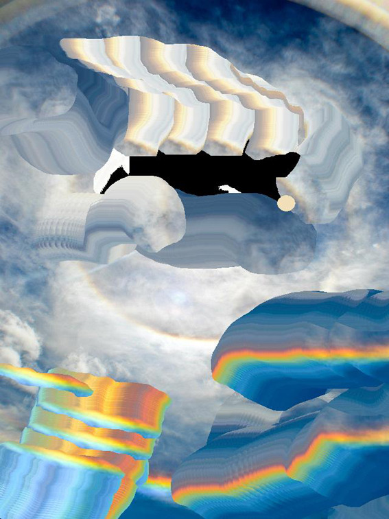

|
Contact: mokujinmadera@gmail.com  |
CVb.1988, Santiago, Chile.EDUCATION 2007 - 2010 Bachelor of Fine Art with major in Painting, Finis Terrae University, Santiago, Chile SOLO EXHIBITIONS 2018 ‘Fray Bentos’, Maggie ́s Art Space, Melbourne, Australia 2016 ‘Patio Parejas’, Club Social de Artistas, Santiago, Chile 2016 ‘Pc Titanic’, La sede, Buenos Aires, Argentina 2015 ‘En los campos suyos’, Estudio Privado Arte, Santiago, Chile 2014 ‘Martin Bruce in Tactile Gallery’, Santiago, Chile 2013 ‘Huelen a vapor de agua’, A cuadrado Gallery, Santiago, Chile 2012 ‘Vruec Series’, House of Bricks, Melbourne, Australia SELECTED GROUP EXHIBITIONS 2015 ‘Retiro en demisarro’ with Fifa 2000, Estudio Panal, Santiago, Chile 2015 ‘Alicia Rey Gallery’, Ch.ACO Art Fair, Santiago, Chile 2014 ‘Museo de América’ Pop Up, Ch.ACO Art Fair, Santiago, Chile 2014 ’La Plata Selection’ F.D.A.C.M.A, Microespacio hall, Provincial Museum of Fine Arts "Emilio Pettoruti", Buenos Aires, Argentina 2014 ‘Simulacro l’, Espacio Falso, Santiago, Chile 2014 ‘Internationow’, Fort Delta Art Gallery, Melbourne, Australia 2013 ‘¿Qué es una casa?’, Action l, Buenos Aires, Argentina 2012 ‘BYOB World Wide’, Video Installation, Santiago, Chile 2012 ‘Astigmatismo’, Acuadrado Gallery, Santiago, Chile 2012 ‘Anamorphism/re-arrangement/construction’, House of Bricks, Melbourne, Australia COLLECTIONS The ‘F.D.A.C.M.A’ Art Foundation, Buenos Aires, Argentina TEACHING 2015 - 2016 Art Tutor, Mustakis Foundation, Santiago, Chile |